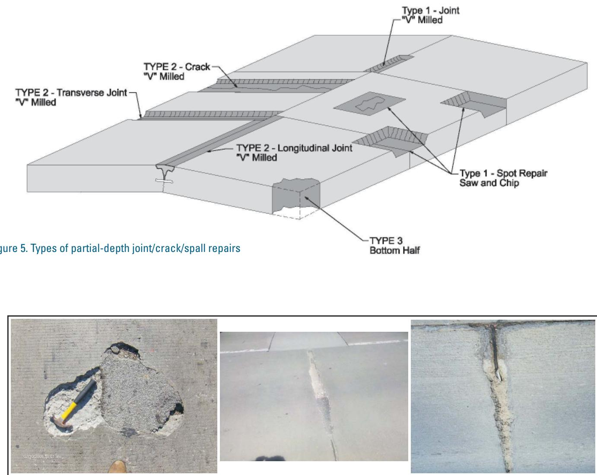
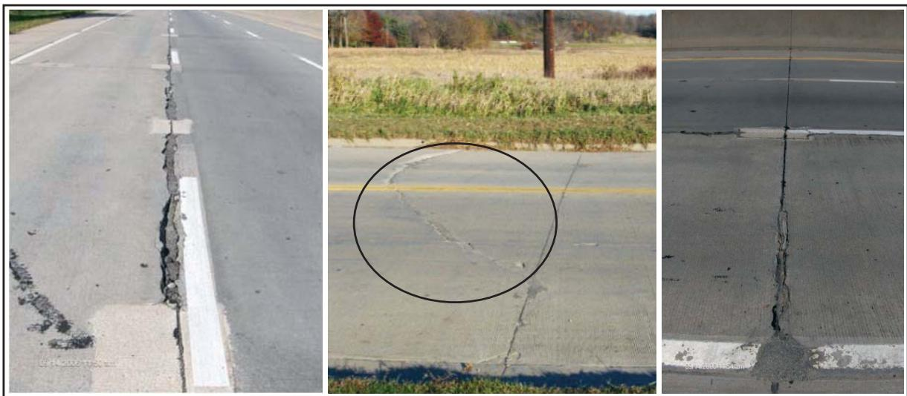
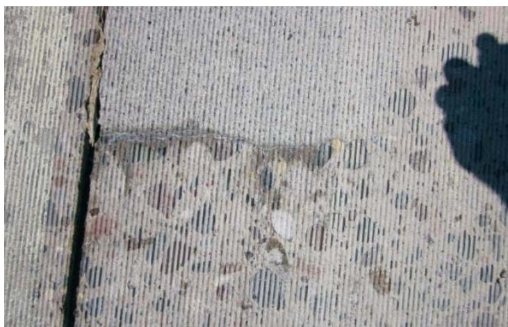
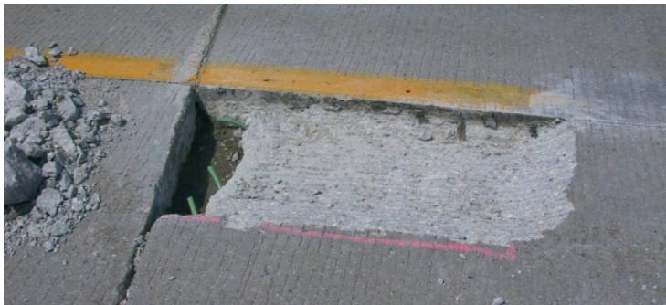

Milled Spot Repair Cost Calculation
Milled Spot Repair Cost Calculation is a standardized engineering tool that translates the measured dimensions of partial‑depth milled repairs on concrete pavement slabs into monetary values used for budgeting, contract payment decisions and selection of cost‑effective repair methods [1]. The model classifies repairs into Type 1 (conventional joint/crack/spall under six feet), Type 2A (longitudinal or transverse joints longer than six feet), Type 2B (random cracks) and Type 3 (bottom‑half repairs) and assigns each a specific measurement basis—square‑foot area for Types 1, 2B and 3, linear‑foot length for Type 2A—recorded to the nearest tenth of a foot (or foot) and rounded to whole units before multiplication by the applicable unit rate [1]. It applies only to concrete pavements exhibiting localized distress such as joint spalling, mid‑slab cracking or scaling where roughly two inches of material are milled with a tapered edge and a compressible relief layer is installed, ensuring consistency with Minnesota DOT guidelines [1].
Purpose and intended use
Milled Spot Repair Cost Calculation provides engineers with a standardized method for converting the measured dimensions of milled spot repairs into monetary values that are used for budgeting, contract payment decisions, and selecting the most cost‑effective repair approach. The tool classifies repairs (Type 1, Type 2A joint, Type 2B crack, Type 3) and applies the appropriate measurement basis—square‑foot for most partial‑depth patches and linear‑foot for long joints—ensuring that payments are calculated consistently with Minnesota DOT guidelines. Measurements are taken to the nearest tenth of a foot, rounded to the nearest square foot (or to the nearest foot for linear measurements), and then multiplied by the unit cost to produce the final payment estimate. [1]
[1] — Type 1–Spot Repairs of Joints,… (pp. 12–13), Type 3–Bottom-Half Spot Repairs (p. 15), Area/Square Footage (p. 16), BASIS OF PAYMENT (pp. 38–40), Length/Linear Foot (pp. 15–16), Payment Methods (p. 15), Summary (p. 16), Typical Costs (p. 15)
Scope and applicability
The milled spot repair cost model is limited to concrete pavement slabs that show localized distress such as joint spalling, mid‑slab surface spalling, cracking, severe scaling in the upper half of the slab, or full‑depth deterioration at corners, edges, or short sections where damage exceeds one‑half the slab thickness. Repairs are classified into three partial‑depth categories: a conventional spot (Type 1) for isolated areas less than six feet long; an extended‑length joint repair (Type 2A) for longitudinal or transverse joints longer than six feet; a random‑crack repair (Type 2B); and a bottom‑half repair (Type 3) when the lower half of the slab requires treatment after the top half has been addressed as a Type 1 or Type 2. All repairs employ milling (or saw‑and‑chip) to remove roughly two inches of deteriorated material, create a 30‑to‑60° tapered edge, and install compressible relief material such as wax‑coated cardboard or STYROFOAM™ before bonding the concrete patch. Measurement and payment rules are: - Type 1 – “Payments for Type 1 joint repairs (less than 6 ft in length) are generally by the square foot of completed patch.” - Type 2A – “Type 2A (joint) repairs are based on linear feet of repair.” - Type 2B – “Type 2B (crack) repairs are based on square feet of repair area.” - Type 3 – “Payment for Type 3 repairs (bottom half of repair area) is based on square feet of repair area.” Linear measurements are rounded to the nearest foot; area measurements are taken to the nearest tenth of a foot and then rounded to whole square‑foot units. The model therefore covers concrete pavement types, the specific deterioration conditions listed above, the standard milling and patching materials and procedures, and the engineering problems of joint, crack, spall, scaling, and full‑depth damage that these partial‑depth spot repairs address. [1]
The following figure illustrates examples of Type 1 spot repair candidates, including spalling, cracks, and joints.

Visual examples of Type 1 spot repair candidates including spalling, cracking, and joint deterioration. [1]Below the diagram are photographs showing physical examples of distress conditions such as spalling, cracks, and joints that serve as candidates for these repairs.
[1] — Type 1–Spot Repairs of Joints,… (pp. 12–13), Type 3–Bottom-Half Spot Repairs (p. 15), Area/Square Footage (p. 16), BASIS OF PAYMENT (pp. 39–40), Length/Linear Foot (pp. 15–16), Summary (p. 16)
The milled‑spot‑repair cost calculation is confined to partial‑depth spot repairs; full‑depth or deep‑cut work is excluded. It may be used only for the defined repair types (Type 1, Type 2A, Type 2B, and Type 3 bottom‑half) and each type carries its own size, location and measurement conditions. For Type 1 patches the length cannot exceed 6 ft, must lie in the upper half of the slab, be spaced at least 2 ft from other patches, and have a minimum area of one square foot; payment is by square‑foot measured to the nearest tenth and rounded to whole units. Type 2A joints longer than six feet are paid by linear footage, with length rounded to the nearest foot and an assumed cut width of about one foot unless a wider cut is contractually specified. Type 2B cracks follow the same square‑foot rule as Type 1. Type 3 bottom‑half repairs are excluded when the transverse extension exceeds 18 in into either lane; they are measured at mid‑depth because of the sloping face and billed on a square‑foot basis. The model assumes existing load‑transfer devices remain functional and that removal depth does not exceed roughly two inches with a 2‑inch extension beyond the distressed edge. Unit rates vary with work volume (larger quantities lower per‑unit cost) and shift timing (night work raises costs). Finally, local jurisdictional preferences may require adapting the payment basis (square‑foot vs linear‑foot), but the underlying measurement rules must be followed. [1]
The following figure illustrates typical candidates for Type 2 extended-length repairs.

Candidates for Type 2 extended-length repair; left to right: longitudinal joint, transverse crack, transverse joint [1]The figure displays three examples of concrete pavement distresses identified as candidates for Type 2 extended-length repairs. From left to right, the images show a longitudinal joint with significant spalling along the white edge line, a transverse crack circled in the center of a lane, and a vertical transverse joint exhibiting deterioration at the bottom.
[1] — Type 1–Spot Repairs of Joints,… (pp. 12–13), Type 3–Bottom-Half Spot Repairs (p. 15), Area/Square Footage (p. 16), BASIS OF PAYMENT (pp. 38–40), Length/Linear Foot (pp. 15–16), Payment Methods (p. 15), Typical Costs (p. 15)
Key content and structure
The milled spot‑repair cost calculation groups all partial‑depth work into three repair categories and links each category to a specific measurement and payment unit.
Repair Types & Measurement Rules - Type 1 (joint, crack or spall patches < 6 ft) – paid by the square foot of the completed patch; area is measured to the nearest tenth of a foot, rounded to the nearest whole square foot, with a minimum billable size of one square foot. - Type 2A (longitudinal or transverse joints > 6 ft) – billed on a linear‑foot basis using an assumed one‑foot milling width; length is measured to the nearest foot. - Type 2B (random cracks and any crack‑type work) – treated like Type 1 and paid by square foot, measured at the appropriate depth to the nearest tenth of a foot and rounded to the nearest whole square foot. - Type 3 (bottom‑half spot repairs where damage exceeds half the pavement thickness) – the lower half is billed by square foot measured at mid‑depth because the face slopes; the upper half follows either Type 1 or Type 2B payment rules.
Eligibility & Thresholds - Joint or crack patches must be less than six feet to qualify as a Type 1 repair. - Any partial‑depth repair may be milled if project volume is sufficient for milling to be more efficient than saw‑and‑chip. - A Type 3 repair cannot protrude transversely more than 18 in.
Cost Scaling & Pricing Data - Typical unit rates are $25–$30 per square foot or $15–$25 per linear foot for average partial‑depth work. - Large‑quantity jobs can reduce rates to $12–$20 per square or linear foot, while small or specialty patches may rise to $55–$60 per unit. - Night‑time work attracts a premium. Larger repair quantities lower the unit cost because equipment expenses are amortized over more patches.
Illustrations - Figure 8 shows a typical cross‑section of a milled Type 1 spot repair. - Figures 11‑12 depict edge‑deterioration geometry for Type 3 repairs, clarifying the mid‑depth measurement requirement.
Key Verbatim Statements - “Payments for Type 1 joint repairs (less than 6 ft in length) are generally by the square foot of completed patch.” - “Payment by linear foot is reserved for Type 2A partial‑depth repairs of longitudinal or transverse joints longer than 6 ft.” - “Measurements should be taken to the nearest tenth of a foot and rounded to the nearest square foot.” - “average cost for partial-depth repairs has been $25 to $30 per square foot or $15 to $25 per linear foot” [1]
[1] — Type 1–Spot Repairs of Joints,… (pp. 12–13), Type 3–Bottom-Half Spot Repairs (p. 15), Area/Square Footage (p. 16), BASIS OF PAYMENT (pp. 38–40), Length/Linear Foot (pp. 15–16), Payment Methods (p. 15), Summary (p. 16), Typical Costs (p. 15)
The guide organizes milled spot‑repair cost information primarily as a continuous narrative rather than as isolated tables or checklists. Descriptive paragraphs are interspersed with numbered figures that visually define each repair type and geometry; Figure 6, Figure 7, Figure 8, Figure 11 and Figure 12 are repeatedly referenced to illustrate small isolated areas, saw‑and‑chip detail, typical Type 1 sections, bottom‑half deterioration zones, and the full repair layout. Cost rules are explained in prose, e.g., “Payments for Type 1 joint repairs (less than 6 ft in length) are generally by the square foot of completed patch,” and the split payment structure is spelled out: “Payment for the overall repair has two parts: Payment for the Type 3 bottom‑half area is by square foot; the top half may be a Type 1 or Type 2B repair payment.” Detailed calculations, procedural steps, and supplemental data are relegated to cross‑referenced sections such as the Construction Steps chapter and Appendix A rather than being presented as separate checklists or tables. This figure‑driven narrative format allows users to follow the text while visually confirming the applicable repair geometry and measurement basis. [1]
The figure below illustrates a close-up view of the debonded area at the end of a Type 2A partial-depth repair.

Close up of debonded area at end of a Type 2A partialdepth repair [1]The image displays the surface texture of concrete pavement, characterized by fine longitudinal grooves and exposed aggregate in areas where material has been removed. A distinct vertical saw cut is visible on the left side, while a horizontal line marks the boundary of a milled section that exhibits significant surface deterioration and spalling.
[1] — Type 1–Spot Repairs of Joints,… (pp. 12–13), Type 3–Bottom-Half Spot Repairs (p. 15)
Required inputs and assumptions
To compute a milled spot‑repair cost the user must supply several project‑specific inputs, condition assessments, material specifications, and design parameters.
Type 1 (joint or crack) repairs – The user must report the length of each joint/crack (must be under six feet) and confirm that deterioration is confined to the upper half of the slab. When two repair areas are within two feet they must be merged. Required design data include the removal depth (approximately two inches), the width extension beyond the distressed zone (minimum two inches), the top dimensions (at least five inches on each side of the joint/crack) with a tapered edge of 30‑60°, and the type of compressible material for joint relief (¼‑inch waxed cardboard or Styrofoam extending at least a half inch beyond the patch).
Type 2A (partial‑depth joint > 6 ft) – The user must provide the linear length of each repair, measured to the nearest foot, and indicate whether the joint is longitudinal or transverse. The nominal milling width is assumed to be one foot based on a 10‑in. or 12‑in. head; any deviation from this width must be documented.
Type 2B (partial‑depth crack) and Type 1 top‑half repairs – The user must supply the repair area in square feet, measured to the nearest tenth of a foot and then rounded to the nearest whole square foot. A minimum billable size of one square foot applies.
Type 3 (bottom‑half) repairs – The user must identify the repair as bottom‑half and measure the area at mid‑depth; the same rounding and minimum‑size rules apply.
All measurements are required to be recorded to the nearest tenth of a foot and rounded to the nearest square foot for payment purposes. [1]
[1] — Type 1–Spot Repairs of Joints,… (pp. 12–13), Area/Square Footage (p. 16), BASIS OF PAYMENT (pp. 38–40), Length/Linear Foot (pp. 15–16)
The milled spot‑repair cost model is governed by a set of explicit assumptions, limitations and boundary conditions. It assumes that only partial‑depth repairs (Types 1, 2A, 2B and 3) are payable; full‑depth work is excluded unless the geometric limits for a given type are exceeded. Measurement methodology is tied to repair type: square‑foot area is used for Types 1, 2B and 3, while linear‑foot length is used for Type 2A joint repairs longer than six feet. Rounding rules require linear lengths to be rounded to the nearest foot and areas to be measured to the nearest tenth of a foot and then rounded to whole square feet, with a minimum billable unit of one square foot for every individual patch.
Size thresholds define the boundaries: “Type 1 spot repairs are less than 6 ft along a transverse or longitudinal joint or crack,” and any spots spaced less than two feet apart must be merged into a single repair. For Type 2A joints longer than six feet, the model presumes a milled width of approximately one foot (based on typical 10‑inch or 12‑inch machine heads); any extra width must be specified in the contract. “Type 3 bottom‑half repairs are measured at mid‑depth because of their sloping face,” with transverse extensions limited to 18 in into either lane—exceeding this triggers a full‑depth repair.
Payment is calculated solely from the quantified area or length: “Payments for Type 1 joint repairs (less than 6 ft in length) are generally by the square foot of completed patch.” The bottom half (Type 3) follows the same principle: “Payment for Type 3 repairs (bottom half of repair area) is based on square feet of repair area.” Ancillary items such as edge tapers, pre‑formed filler, sawing and sealing are considered part of the repair but are not billed separately. Rate adjustments may be applied for volume discounts or special conditions (e.g., night work), but all calculations remain bounded by the defined repair types, size thresholds, measurement precisions and minimum billable units. [1]
[1] — Type 1–Spot Repairs of Joints,… (pp. 12–13), Type 3–Bottom-Half Spot Repairs (p. 15), Area/Square Footage (p. 16), BASIS OF PAYMENT (pp. 38–40), Length/Linear Foot (pp. 15–16), Payment Methods (p. 15), Typical Costs (p. 15)
Method and workflow
Step‑by‑step procedure for applying the milled spot repair cost calculation:
- Identify whether the work is a bottom‑half (Type 3) repair or a top‑half repair that will be treated as Type 1 or Type 2B.
- For a Type 3 bottom‑half repair, first confirm that deterioration exceeds half the pavement thickness and therefore qualifies as a full‑depth spot.
- Measure the bottom‑half repair area at the mid‑depth of the slab because the face slopes; record length and width to the nearest tenth of a foot, convert to square feet and round to the nearest whole square foot, applying a minimum charge of one square foot.
“Since the Type 3 repair will have a sloping face, payment should be measured at mid‑depth of the pavement thickness.” “Measurements should be taken to the nearest tenth of a foot and rounded to the nearest square foot.” “Minimum size of repair for payment is one square foot.” - Compute the bottom‑half cost by multiplying the rounded square‑foot quantity by the unit rate per square foot.
- Determine how the top half will be classified (Type 1 or Type 2B) and measure the full repair area—including the 30‑ to 60‑degree edge taper—in square feet, rounding in the same manner; payment for this portion is also on a per‑square‑foot basis.
“Payment for the overall repair has two parts: Payment for the Type 3 bottom‑half area is by square foot; the top half may be a Type 1 or Type 2B repair payment.” - Compute the top‑half cost using the appropriate rate and add it to the bottom‑half cost to obtain the total repair charge. [1]
The following figure illustrates a type 3 repair involving removal by milling and chipping.

Type 3 repair – Removal by milling and chipping [1]The image displays a rectangular section of concrete pavement where the top layer has been removed, exposing the underlying aggregate. A pile of broken concrete debris is visible on the left side of the excavation area. The edges of the repair area are cut vertically, creating a distinct boundary between the existing slab and the milled section. This visual evidence corresponds to the preparation phase where deteriorated concrete is removed by milling or chipping to expose sound material for repair.
[1] — Type 3–Bottom-Half Spot Repairs (p. 15), BASIS OF PAYMENT (p. 40)
Criteria, outputs, and interpretation
The milled spot‑repair cost model classifies repairs into three primary types and ties each classification to specific dimensional thresholds, measurement units, and payment rules.
Type 1 – Conventional joint, crack or spall (partial‑depth) - Length threshold: less than six feet along a transverse or longitudinal joint or crack; any patches spaced closer than two feet are merged into a single unit. - Depth of concrete removal is limited to about two inches with a minimum top dimension of five inches on each side and tapered edges between thirty and sixty degrees. - Measurement: square‑foot area. Measurements are taken to the nearest tenth of a foot, rounded to the nearest whole square foot, and a minimum billable area of one square foot applies per individual repair. - Payment rule: billed by the square foot of completed patch.
Type 2 – Extended‑length repairs - Subtype 2A (joint): applied when joint length exceeds six feet. The repair is measured in linear feet, recorded to the nearest foot, with an assumed width of about one foot (reflecting typical 10‑ or 12‑inch milling heads). Linear‑foot measurement is reserved for these long joints. - Subtype 2B (random crack): continues to use square‑foot measurement, following the same rounding and minimum‑size rules as Type 1.
Type 3 – Bottom‑half spot repair - Triggered when concrete loss exceeds one‑half of the slab thickness (T/2). The repair may not protrude transversely into either lane more than 18 in.; any exceedance recommends a full‑depth repair. - Measurement: square‑foot area taken at mid‑depth because the repaired face slopes. The bottom half is billed by square foot as a second payment after the top half, which must have been paid as a Type 1 or Type 2B repair.
Payment thresholds and rounding - A minimum billable size of one square foot applies to all square‑foot classifications. - Measurements for square‑foot billing are taken to the nearest tenth of a foot and then rounded to the nearest whole square foot; linear‑foot measurements are recorded to the nearest foot.
Cost relationships and pricing bands - Unit prices range from $12–$20 for high‑volume work to $55–$60 for low‑volume or night‑time operations. - Partial‑depth patches generally fall between $25–$30 per square foot (or $15–$25 per linear foot). - A governing rule states that as the total repair volume increases, the unit cost declines because milling equipment expense is spread across more patches.
These criteria, thresholds, classifications, measurement rules, and pricing relationships constitute the complete framework for milled spot‑repair cost calculation. [1]
[1] — Type 1–Spot Repairs of Joints,… (pp. 12–13), Type 3–Bottom-Half Spot Repairs (p. 15), Area/Square Footage (p. 16), BASIS OF PAYMENT (pp. 38–40), Length/Linear Foot (pp. 15–16), Payment Methods (p. 15), Summary (p. 16), Typical Costs (p. 15)
Authority and technical basis
The excerpt is taken from the PDR advisory guide (PDR_guide_Apr2012), which operates as an industry‑level guidance document rather than a governing specification or standard test method. It provides practical procedures for milled Type 1 spot repairs, defines how measurements and payments are calculated, and notes that it was developed from a state DOT standard, indicating its role as an agency‑issued advisory manual. [1]
[1] — Type 1–Spot Repairs of Joints,… (pp. 12–13), BASIS OF PAYMENT (pp. 38–39)
The milled spot‑repair cost model is anchored in contract specifications that first classify repairs into three types and then prescribe the measurement basis and payment rule for each. Type 1 (conventional joint, crack or spall) repairs are limited to sections under six feet; when the dimensional criteria are met the contract pays by area, while longer joints (Type 2A) shift to a linear‑foot basis and cracks (Type 2B) remain on an area basis. Bottom‑half spot repairs (Type 3) are billed as a second payment measured at mid‑depth of the pavement thickness and also use square‑foot units.
The design procedure for quantifying each repair is explicitly defined. Linear measurements are taken to the nearest foot of length, reflecting the typical one‑foot width of milling heads, whereas area measurements are recorded to the nearest tenth of a foot and rounded to the nearest whole square foot with a minimum billable size of one square foot. These measurement rules ensure consistent unit pricing across all repair types.
Field‑derived research findings provide the unit rate benchmarks that populate the cost model. Historical data indicate an average cost of $25–$30 per square foot for partial‑depth repairs and $15–$25 per linear foot, with night‑time work commanding higher premiums. An underlying engineering principle is economies of scale: as the volume of spot repairs increases, the fixed expense of milling equipment is spread over more units, reducing the unit cost.
Operational efficiency is also codified in the specifications. When a sufficient quantity of repairs exists on a project, milling can be completed faster than saw‑and‑chip methods, delivering schedule and cost advantages that reinforce the chosen measurement and payment methodology. [1]
[1] — Type 1–Spot Repairs of Joints,… (pp. 12–13), Type 3–Bottom-Half Spot Repairs (p. 15), Area/Square Footage (p. 16), BASIS OF PAYMENT (pp. 38–40), Length/Linear Foot (pp. 15–16), Payment Methods (p. 15), Summary (p. 16), Typical Costs (p. 15)
Limitations and cautions
The milled‑spot repair cost model is built on a series of simplifications and explicit boundary conditions that generate measurable uncertainties and clear avenues for misuse. First, the model treats three‑dimensional, sloping repairs as two‑dimensional square‑foot areas measured at mid‑depth, which “simplifies a potentially irregular geometry into a flat square‑foot figure and introduces uncertainty if the actual slope deviates.” This simplification, combined with rounding measurements to the nearest tenth of a foot and then to whole square feet, can cause appreciable variance especially for small patches. A minimum billable size of one square foot further skews cost estimates when the physical repair is sub‑square‑foot.
Second, eligibility for pricing units is strictly bounded: only Type 1 joint/crack, Type 2B random crack, and Type 3 bottom‑half spot repairs qualify for square‑foot payment, while linear‑foot rates are “reserved for Type 2A partial‑depth repairs of longitudinal or transverse joints longer than 6 ft” and assume a roughly one‑foot milling width. Applying either pricing method outside these repair types or ignoring the six‑foot length threshold will produce inaccurate estimates.
Third, specific geometric limits govern the use of square‑foot rates for Type 3 repairs: the repaired area must not extend more than 18 in. transversely from an edge; exceeding this limit triggers a recommendation for a full‑depth repair and using the square‑foot rate beyond that boundary would be misuse.
Finally, the cost split between bottom‑half (square‑foot) and any top‑half portion (treated as Type 1 or 2B) must be observed to avoid double‑counting or omission of work. Misapplying the mid‑depth measurement to repairs with different depth profiles, ignoring the incidental nature of edge tapers, or failing to capture required milling head widths in the contract are additional sources of error. [1]
[1] — Type 3–Bottom-Half Spot Repairs (p. 15), Area/Square Footage (p. 16), BASIS OF PAYMENT (p. 40), Length/Linear Foot (pp. 15–16)
References
- Guide for Partial-Depth Repair of Concrete Pavements (2012) [link]